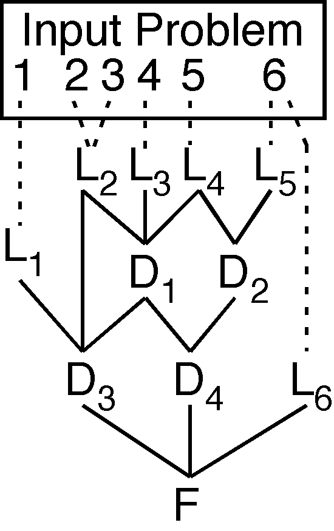

Derivation DAGs

Derivation Structure
- Derivations are DAGs
- Leaf nodes from the input problem
- Derived nodes inferred from parents
- Root nodes are the final derived formulae
Semantic Verification
- Check leaf nodes' semantic relationships to input
- Check derived nodes' semantic relationships to parents
- Various semantic relationships
- Copied
- Derived logical consequences
- Relevant logical consequences
- Inverse logical consequences
- Negated logical consequences